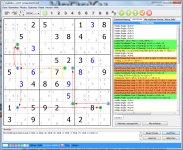
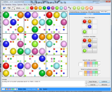

Willkommen bei HoDoKu: Sudokus generieren/l?en/trainieren/analysieren
HoDoKu ist ein in Java geschriebenes Sudoku-Programm, das auf Deutsch und Englisch verf?bar ist. Erzeugen Sie Sudokus in f?f verschiedenen, voll konfigurierbaren Schwierigkeitsstufen. L?en Sie sie selbst (auch mit Hilfe von HoDoKus Hinweissystem) oder lassen Sie das von HoDoKu erledigen.
HoDoKu unterst?zt weit mehr verschiedene L?ungsstrategien als die meisten anderen Programme (Singles, Subsets, LCs, Fish, Wings, Uniqueness, Coloring, Chains, ALS; f? Details siehe "L?ungsstrategien"). Alle L?ungschritte k?nen im Puzzle hervorgehoben werden, was HoDoKu auch zu einem gro?rtigen Werkzeug zum Lernen und Verstehen neuer Strategien macht.
|  |  | ||
| Standardansicht (Skyscraper ist sichtbar) |
L?ung anzeigen (Nice Loop ist sichtbar) |
Zusammenfassung anzeigen (W-Wing ist sichtbar) |
ColorKu-Modus (Ansicht "Aktive Zelle" ist sichtbar) |
{kind=link}
{kind=link}
{kind=link}
{kind=link}
 |
|||
| Allgemeine Optionen | Optionen f? L?ungsschritte | Solver-Optionen | Optionen f? Farben |
{kind=link}
{kind=link}
{kind=link}
Wenn Sie eine bestimmte Technik ?en wollen, schalten Sie den "Trainings-Modus" ein, w?len Sie eine Technik und jedes neu erzeugte Sudoku wird diese Technik enthalten. Wenn Sie wollen, k?nen diese Sudokus auch automatisch so weit gel?t werden, dass die Technik direkt angewendet werden kann.
HoDoKu enth?t au?rdem einen umfangreichen Analyzer: Es kann alle verf?baren L?ungsschritte f? einen bestimmten Zustand anzeigen, die L?ung kann entsprechend angepasst werden. Mehrere L?ungen f? ein und das selbe Sudoku werden unterst?zt, Sudoku plus L?ungen k?nen in eine Datei geschrieben werden.
Version 2 wartet mit vielen zus?zlichen Features auf: W?len Sie Sudokus aus HoDoKus neuer Verlaufsfunktion (inklusive Vorschau), lassen Sie f? jeden Schritt berechnen, wie weit er die L?ung vorantreibt, sortieren Sie verf?bare Schritte nach Typ, Zelle, Kandidat oder Eliminierungen. Und wenn Sie unbedingt raten m?sen, setzen Sie vorher einen Sicherungspunkt und kehren Sie mit einem Klick zu diesem Zustand zur?k, wenn etwas schief geht.
- 2012-07-31
- HoDoKu Version 2.2 ist jetzt verf?bar. Die neue Version enth?t viele
Verbesserungen der Oberfl?he (siehe
ColorKu-Modus),
au?rdem wurden einige Fehler behoben. F? Benutzer mit Sehbehinderungen
kann nun die Gr?e der Schriftart f? die gesamte Benutzeroberfl?he
(inkl. aller Dialoge) angepasst werden (unter einigen Linux-Varianten
nicht verf?bar). Das Zusammenspiel mit anderen Sudoku-Programmen
wurde durch die Unterst?zung zahlreicher Textformate f? Sudokus verbessert.
Herzlichen Dank an ddyer und CCV f? ihre Beitr?e zur Software! - 2012-01-19
- HoDoKu Version 2.1.3 ist jetzt verf?bar. Die neue Version behebt einen kritischen Fehler, der dazu f?ren konnte, dass das Programm nicht korrekt startet.
- 2012-01-16
- HoDoKu Version 2.1.2 ist jetzt verf?bar. Die neue Version ist ein Service-Release, das einen Fehler in der Hintert?-Suche und mehrere Fehler, die nur im Batch-Betrieb auftreten, behebt. Einige kleinere Oberfl?hen-Funktionen wurden hinzugef?t.
- 2011-10-23
- HoDoKu Version 2.1.1 ist jetzt verf?bar. Die neue Version beseitigt einen Fehler in der internen Zwischenspeicherung, der zu fehlerhaften L?ungsschritten f? Template Set, Template Delete, Brute Force (nur im Batch-Modus) und Kraken Fish f?ren konnte. Au?rdem kann die Anzeige der selektierten Zelle eine bestimmte Zeit nach der letzten ?derung der Selektion abgeschaltet werden.
- 2011-10-20
- Es hat einige Zeit gedauert, aber HoDoKu Version 2.1 ist schlie?ich doch verf?bar. Die neue Version enth?t eine komplette Neuimplementierung der internen Datenstrukturen und Solverroutinen, was das Programm zwei bis drei Mal schneller macht als Version 2.0. Das Benutzerhandbuch wurde noch nicht an die neue Version angepasst.
- 2010-04-14
- HoDoKu Version 2.0.1 ist jetzt verf?bar.
- 2010-03-11
- HoDoKu Version 2.0 ist jetzt verf?bar.
- 2009-05-08
- HoDoKu Version 1.2.4 ist jetzt verf?bar.
- 2009-05-01
- Der L?ungsstrategie-F?rer ist jetzt fertig gestellt.
- 2009-04-19
- Die erste Beta-Version des L?ungsstrategie-F?rers ist jetzt online.
- 2009-04-04
- HoDoKu Version 1.2 ist jetzt verf?bar.
- 2009-03-12
- Benutzerhandbuch ist online.
- 2009-03-03
- HoDoKu Version 1.1 ist jetzt verf?bar.
- 2009-01-29
- HoDoKu Version 1.0 ist jetzt verf?bar.
- 2009-01-15
- HoDoKu Version 0.9 ist verf?bar. Obwohl die Versionsnummer mit "0" startet, ist das Programm intensiv getestet und l?ft stabil.
Lizenz
HoDoKu ist offene Software lizensiert unter der GPLv3.
Copyright © 2008-12 von Bernhard Hobiger
Zuletzt geändert am 5. Mai 2025 von shorty#3746
(basierend auf dem 1to9only Github-Repo)
Alles Material auf dieser Site unterliegt der GNU FDLv1.3.